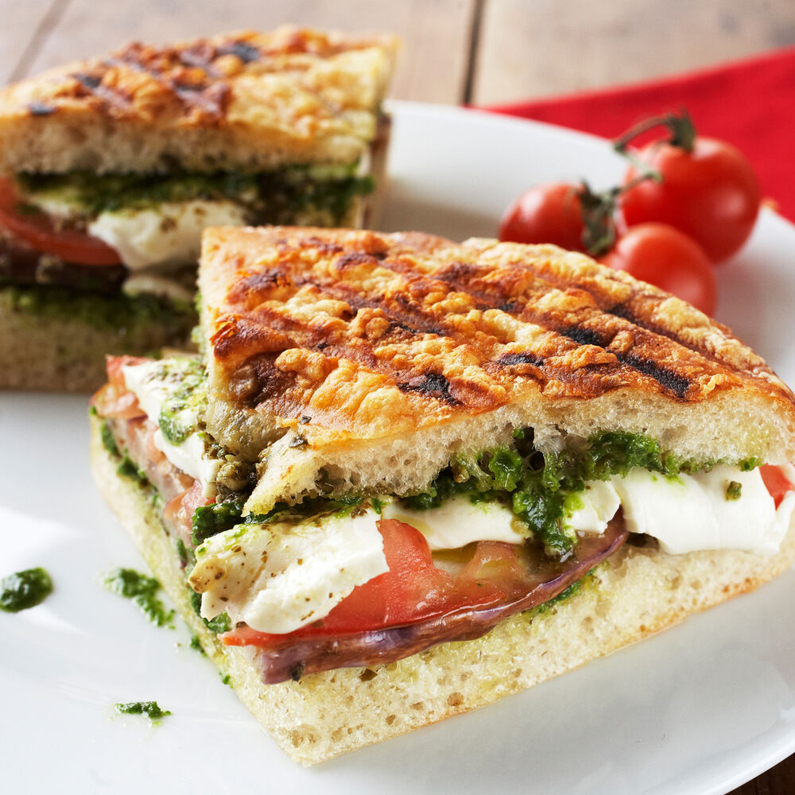

Cauliflower Orange Chicken
Ingredients
1 head of cauliflower
1 cup water
3/4 cup flour
1 tbsp garlic powder
2 cups panko breadcrumbs
1 cup orange chicken sauce
Directions:
- Wash then cut the cauliflower into bite size pieces.
- Combine the water, flour. garlic powder in one bowl.
- Pour the breadcrumbs into a second bowl.
- Add the cauliflower in the batter then into the breadcrumbs.
- Bake at 400 degrees for 25 minutes, or until golden.
- Heat up the orange chicken sauce in a large pan, then add the cauliflower.
- Mix until cauliflower is completely coated.
- Top with sesame seeds and serve over white rice.
Beef Tacos
Ingredients
1 lb ground beef
1 tbsp chili powder
1/2 tsp salt
3/4 tsp cumin
1/2 tsp dried oregano
1/4 tsp garlic powder
1/4 tsp onion powder
1/2 cup tomato sauce
8 corn tortillas
Toppings:
Diced tomatoes
Diced onions
Shredded lettuce
Shredded cheese
Sour cream
Directions:
- Combine all the seasonings in one dish, set aside.
- In a pan, fully cook the ground beef until brown and remove any excess grease.
- Add the tomato sauce and taco seasoning to the pan and let it sit for 5 minutes.
- Remove from heat and add beef to taco shell
- Now add your toppings of choice and enjoy!
Tomato Mozzarella Panini
Ingredients

4 slices ciabatta bread
2 tbsp olive oil
1/2 cup basil pesto
8 slices mozzarella cheese
1 tomato, sliced
basil, chopped
1/2 tsp salt
1/2 tsp pepper
Directions:
- Brush the outside of the bread with olive oil and spread the basil pesto on the inside.
- Add the cheese, tomato, salt, pepper and basil.
- Close sandwich and place on panini press for 3 minutes or until toasted.